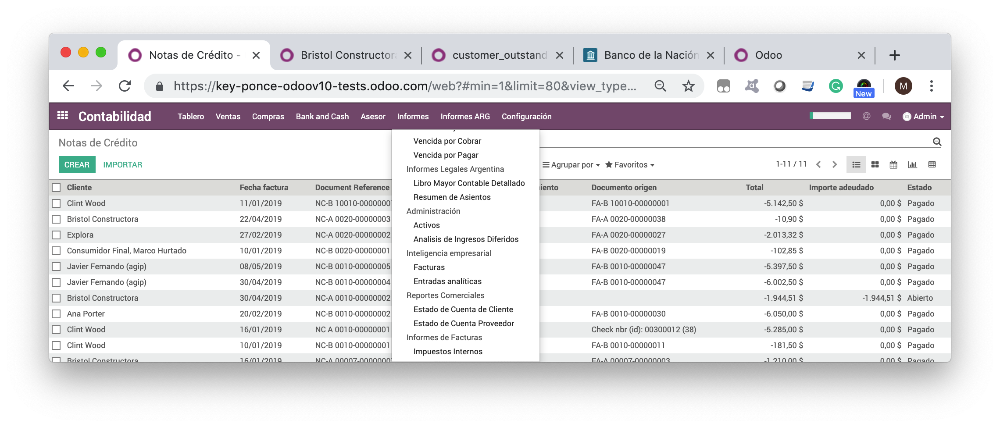
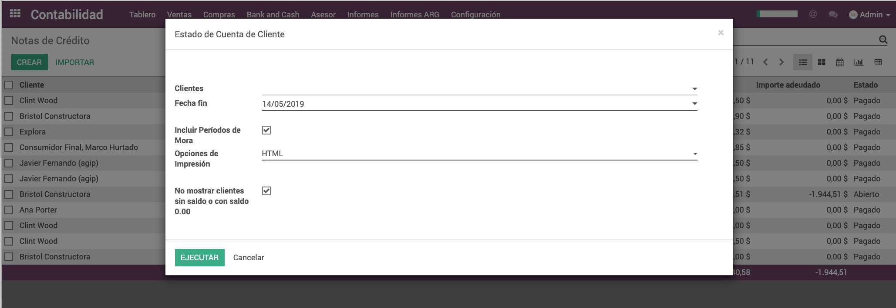
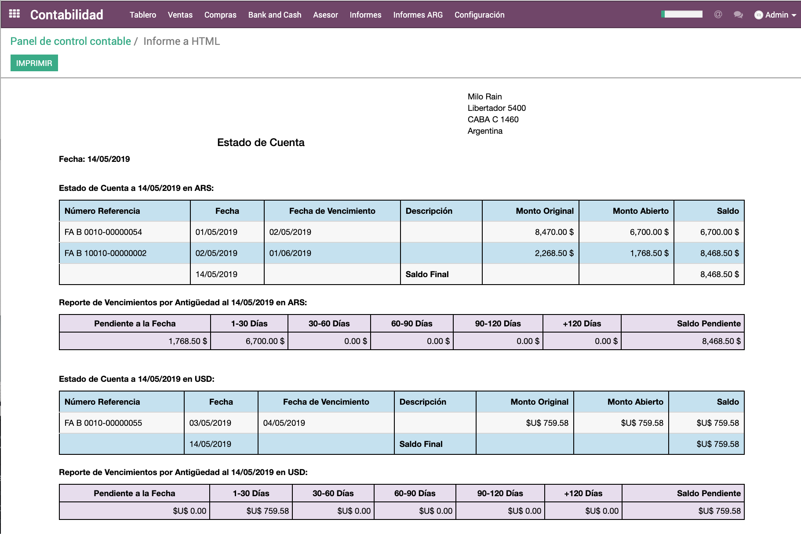

Mejoras al Informe de Estado de Cuentas Clientes / Proveedores
Observaciones:
☑ Este app agrega mejoras al informe de Estado de Cuenta Empresas (customer_outstanding_statement), por tanto es necesario que este se encuentre instalado.
☑ Los informes se muestran disponibles desde el menú de Informes de Contabilidad, en lugar de desde cada cliente/proveedor.
☑ Hay tres opciones de formato para el informe: html, pdf y excel.
Instalación
Al instalar este app, se podrá observar dos nuevos informes en el menú de "Informes" >> "Informes Comerciales", que muestra los dos informes.

Opciones del Informe

☑ En el campo de "Cliente" se pueden ingresar uno o más clientes para limitar el informe. Si el campo queda sin valores al ser ejecutado, incluirá a todos los clientes.
☑ Es necesario indicar la fecha hasta la que se debe mostrar el Estado de Cuentas del Cliente.
☑ La opción de incluir "Períodos de Mora" está seleccionada por defecto, pero puede ser editada por el usuario si estad información no es requerida.
☑ Otra opción por defecto es la que evita incluir clientes/proveedores que no tuvieron movimientos.
Formatos de Impresión

Este informe puede ser ejecutado para el formato de html, pdf y/o excel.